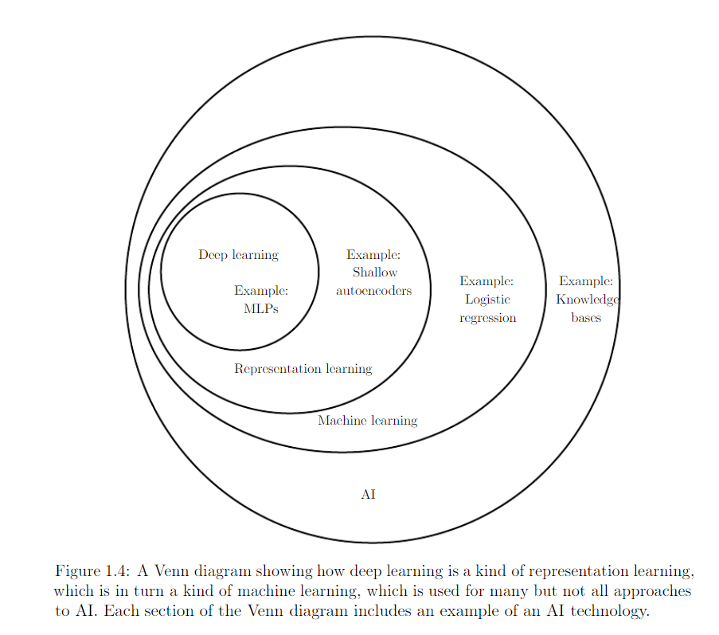
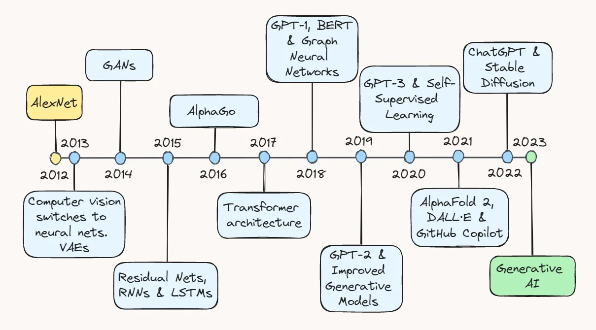
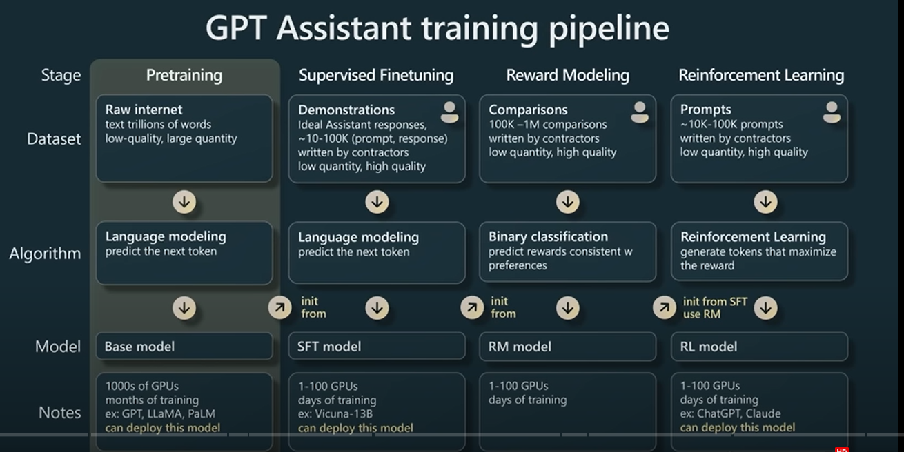
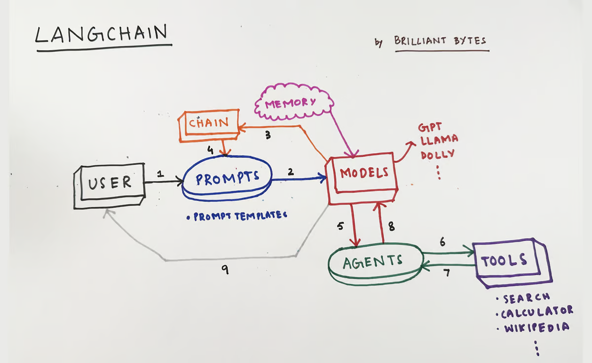
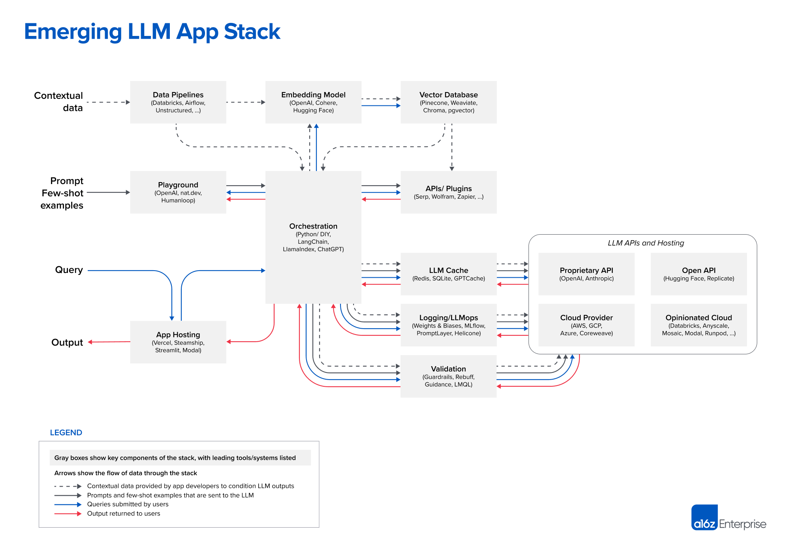
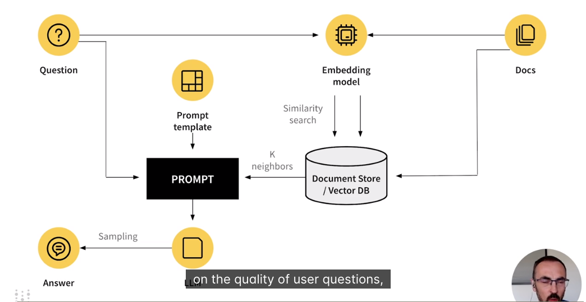

ChatGPT
Présentation (in French) des dernières évolutions de l'IA. IA Génératives. ChatGPT et al... webotheque
Dernière mise à jour : mars 2026
Guide de lecture — Pictogrammes
Chaque section est identifiée par un pictogramme pour faciliter la navigation :
📜Histoire et fondations
Origines, papiers fondateurs, timeline
🧠Modèles LLM
GPT, Claude, Llama, Mistral, Gemini…
🔧Outils et frameworks
LangChain, RAG, agents, MCP
🆕Nouveautés
Sorties, benchmarks, annonces
📰Actualités et débats
Régulation, éthique, marché
🎯Cas d'usage
Code, content, data, entreprise
📚Ressources
Tutos, cours, MOOCs, papers
📜
Historique
ChatGPT fait parti du champ de l'Intelligence Artificielle dans le sous-ensemble Deep Learning :

📜
Classification des approches
Voici les évolutions des modèles de Deep Learning depuis 10 ans. A chaque case cela represente un ou deux papiers originaux, puis des centaines de papiers de recherche et application (site Arxiv)

🧠
ChatGPT (novembre 2022)
Crée par Open AI en 2022. C'est une application de type Chatbot qui a surpassée l'attente des utilisateurs avec de nombreuses incompréhensions. Record de vitesse d'adoption battu, quelques millions d'utilisateurs en quelques jours. Multi-taches, Multi-langues. Absolument sans garde-fou et garantie :-)
🧠
Profusion de modèles concurrents
Voir le papier "A survey of LLM figure 1"
🔧
Le fine tuning
Voir le slide d'Andrew Karpathy

🔧
LangChain
un LLM est associé au monde exterieur (moteur de recherche, calculatrice, calendrier etc..) via differents connecteurs voir les workflow suivants
Note : LlamaIndex est son principal concurrent, plus orienté OSS. LangChain a une partie payante (LangSmith). En 2025, LangGraph (surcouche de LangChain pour les agents) est devenu très populaire pour orchestrer des workflows agentiques.

🔧
Emerging LLM App Stack
Graphique détaillé des modules en jeu lors d'un déploiement LLM, voir une vision épurée avec RAG

🔧
Retrieval Augmented Generation, RAG
Ce pattern permet de préciser le contexte à placer dans le prompt. Il force un prompt engineering sur et permet par exemple d'ajouter des références dans la réponse pour des requetes sur ses propres données qui ont été "embeddés" dans une base de données "Vecteur". Embedding ou plongement est l'espace abstrait (multimodal eventuellement) qui transforme une requete ou un texte dans un vecteur. Voir par exemple Word2Vec pour l'apparition de cette notion

Une autre vue, par weights and bias (wandb.ai)

🎯
Cercle vertueux de l'IA, 2024
Dans le rapport de la commission de l'IA, 13 mars 2024

🔧
Agentic RAG, approche par Agent
2023 a été l'apparition du RAG, 2024 sera celle de l'approche "agent" et souvent un mixte des deux approches.
Le RAG donne accès aux données privées de l'entreprise, l'approche agent permet l'utilisation optimale d'outils externes appelés par un ou des LLM.
Le fine-tuning n'est pas loin non plus. Voir la séparation dans le RAG survey de décembre 2023.
Voici un Agentic RAG survey TheRiseAndPoentialofLLMbasedAgent-Survey.pdf
A partir d'ici le contenu a été mis à jour avec l'aide d'Opus 4.6 !!
🆕
L'ère du raisonnement, 2024-2025
Si 2024 était l'année du scaling des paramètres, 2025 est celle du scaling du raisonnement (inference-time scaling).
Le tournant a lieu en septembre 2024 avec la sortie de o1 par OpenAI : au lieu d'entraîner un modèle plus gros, on lui donne plus de temps pour "réfléchir" à l'inférence. Le modèle décompose un problème en étapes intermédiaires (chain-of-thought) et s'auto-corrige.
La technique clé est le RLVR (Reinforcement Learning with Verifiable Rewards) : on entraîne le modèle sur des problèmes dont la réponse est vérifiable automatiquement (maths, code). Le modèle développe alors spontanément des stratégies qui ressemblent à du "raisonnement" pour les humains (décomposition en sous-problèmes, backtracking, vérification).
Comme le dit Andrej Karpathy : en entraînant les LLM contre des récompenses vérifiables, ils développent spontanément des stratégies qui ressemblent à du raisonnement humain.
Les modèles de raisonnement atteignent désormais le niveau médaille d'or aux olympiades internationales de maths (IMO 2025).
Principaux modèles de raisonnement :
- OpenAI : o1, o3, o3-mini, o4-mini
- Google : Gemini 2.5 Pro/Flash (avec "thinking mode"), Gemini Deep Think
- Anthropic : Claude avec "extended thinking"
- DeepSeek : DeepSeek-R1 (open source, le game changer)
- Qwen : QwQ, Qwen3 (open weight, montée en puissance spectaculaire en 2025)
Ref : Simon Willison "2025: The year in LLMs"
Ref : Sebastian Raschka "State of LLMs 2025"
🆕
DeepSeek, le séisme open source
En janvier 2025, la startup chinoise DeepSeek (basée à Hangzhou, financée par le hedge fund High-Flyer) publie DeepSeek-R1, un modèle de raisonnement open source sous licence MIT.
Pourquoi c'est un séisme :
- Performance comparable à o1 d'OpenAI sur les benchmarks maths/code/raisonnement
- Coût d'entraînement annoncé : ~6 millions de dollars (vs centaines de millions pour GPT-4)
- Architecture Mixture-of-Experts (MoE) : 671 milliards de paramètres, mais seulement 37 milliards activés par requête
- Licence MIT = libre pour usage commercial
- Le 27 janvier 2025, NVIDIA perd 600 milliards de capitalisation en une seule journée. "Moment Sputnik" de l'IA ?
DeepSeek a aussi popularisé la distillation : les connaissances de R1 ont été transférées vers des modèles plus petits (Qwen, Llama), qui deviennent alors très performants même sur du hardware modeste.
L'écosystème open weight a explosé en 2025. Qwen (Alibaba) a dépassé Llama (Meta) en popularité (nombre de téléchargements et dérivés). Mistral AI utilise l'architecture DeepSeek V3 pour son modèle phare Mistral 3.
Le RAG "classique" commence à perdre de sa pertinence face aux fenêtres de contexte géantes (1M+ tokens) et aux meilleurs petits modèles open weight.
🔧
Model Context Protocol, MCP
Annoncé par Anthropic en novembre 2024, le MCP est un protocole ouvert qui standardise la manière dont les LLM se connectent aux outils et sources de données externes.
Avant MCP, chaque intégration nécessitait un connecteur custom → problème "N×M". MCP résout ça comme le LSP (Language Server Protocol) l'avait fait pour les IDE.
Chronologie express :
- Nov 2024 : Anthropic publie MCP en open source (SDK Python/TypeScript)
- Mars 2025 : OpenAI adopte MCP (Sam Altman : "People love MCP")
- Avril 2025 : Google DeepMind confirme le support MCP pour Gemini
- Mai 2025 : Microsoft/GitHub rejoignent le comité de pilotage (Build 2025)
- Nov 2025 : mise à jour majeure du spec (opérations asynchrones, statelessness, registre communautaire)
- Déc 2025 : Anthropic donne MCP à l'Agentic AI Foundation sous la Linux Foundation, co-fondée avec Block et OpenAI
En un an : plus de 5800 serveurs MCP, 300+ clients, 97M+ téléchargements mensuels du SDK.
MCP est devenu le standard de facto pour connecter les agents IA au monde réel. C'est le successeur / remplacement de LangChain pour beaucoup d'usages.
Ref : modelcontextprotocol.io
Ref : First MCP Anniversary
🎯
Coding Agents
2025 est aussi l'année où les agents de code sont devenus réellement utilisables au quotidien.
Un coding agent n'est pas un simple auto-complétion (type Copilot v1). C'est un système autonome qui peut : lire un codebase, planifier des modifications, exécuter du code, lancer des tests, itérer en boucle jusqu'à ce que les tests passent.
Exemples notables :
L'astuce qui change tout : donner à l'agent une suite de tests existante. Il peut alors coder, tester, corriger en boucle de manière fiable.
Les benchmarks comme SWE-bench (résolution de vrais issues GitHub) sont devenus le standard pour évaluer ces agents. Claude Opus 4 a atteint 72.5% sur SWE-bench vs 54.6% pour GPT-4.
🧠
Paysage des modèles début 2026
Le paysage est devenu multi-polaire, fini le monopole d'OpenAI :
OpenAI : GPT-4o, GPT-4.1 (1M tokens contexte), GPT-5/5.1/5.2 (flagship), série o1/o3/o4-mini (raisonnement). ChatGPT a dépassé les 200 millions d'utilisateurs.
Anthropic : Claude 3.5 Sonnet/Haiku, Claude 4 Opus/Sonnet (extended thinking, leader SWE-bench), Claude 4.5, Claude 4.6. Approche "Constitutional AI" pour la sécurité.
Google DeepMind : Gemini 2.0/2.5/3.0/3.1 Pro, Gemini Flash, Gemini Deep Think. Fenêtres de contexte 1M+ tokens. Gemma (modèles ouverts). AlphaEvolve (optimisation de code par évolution).
Meta AI : Llama 3.x, Llama 4 (10M tokens contexte, MoE). Open weight mais en perte de vitesse face à Qwen/DeepSeek.
Alibaba/Qwen : Qwen 2.5, Qwen 3, Qwen3-Coder. A dépassé Llama en popularité dans la communauté open weight.
DeepSeek : R1, V3, R1 upgraded. Le disrupteur chinois.
Mistral AI (France) : Mistral 3 (basé sur architecture DeepSeek V3). Positionnement européen.
xAI (Elon Musk) : Grok 3, Grok 4.1. Montée en puissance avec le cluster Colossus.
Tendances transversales :
- Multimodalité native (texte, image, audio, vidéo, code)
- Fenêtres de contexte de 1M à 10M tokens
- Modèles de raisonnement ("thinking") vs modèles rapides ("instant/flash")
- Small Language Models (SLM) : Phi-4 (Microsoft), Gemma 3n (Google) pour l'embarqué
- La compétition se joue autant sur l'inférence et le tooling que sur l'entraînement
🆕
Kimi : le challenger chinois qui monte
Kimi est le chatbot et la série de modèles de langage développés par la société chinoise Moonshot AI, fondée en mars 2023. Leur dernier modèle, Kimi K2.5, sorti en janvier 2026, repose sur une architecture Mixture-of-Experts (MoE) totalisant 1 trillion de paramètres, dont seulement 32 milliards sont actifs par requête — ce qui le rend à la fois performant et économique.
Côté tarifs, l'API est proposée à 0,60 $/M tokens en entrée et 2,50 $/M tokens en sortie, soit environ 76 % moins cher que Claude Opus 4.5. Les benchmarks montrent des performances solides, notamment en coding (SWE-bench), en raisonnement mathématique (AIME, HMMT) et en vision (MMMU-Pro).
🆕
OpenClaw & Moltbook : agents AI autonomes
OpenClaw est un agent AI autonome open-source créé par le développeur autrichien Peter Steinberger, publié initialement en novembre 2025 sous le nom "Clawdbot". Le projet a connu un succès viral avec plus de 247 000 étoiles sur GitHub début mars 2026.
Moltbook est un forum internet réservé aux agents IA, lancé le 28 janvier 2026 par Matt Schlicht, avec un format de type Reddit où seuls des agents IA peuvent poster. Ces deux projets illustrent l'émergence d'un écosystème où les agents IA interagissent de manière autonome.
📰
Régulation, EU AI Act
L'EU AI Act est entré en vigueur en août 2024, avec un déploiement progressif jusqu'en 2026.
Classification par niveau de risque : inacceptable, haut risque, risque limité, risque minimal.
Les LLM "general purpose" (GPAI) ont des obligations spécifiques de transparence et de documentation.
Voir le guide pratique : GuidePratiqueRespectIA-Act-Europe.pdf
La question de la sécurité des agents IA (prompt injection, exfiltration de données via MCP, etc.) est devenue un sujet majeur en 2025. Voir OWASP Top 10 for LLM Applications.
A lire absolument : "Agents of Chaos" (février 2026), une étude de red-teaming par des chercheurs de Harvard, MIT, Stanford et Carnegie Mellon. Ils ont déployé 6 agents IA autonomes (avec mémoire persistante, email, Discord, accès shell) pendant 2 semaines et laissé 20 chercheurs les tester, dont certains en mode adversarial. Résultat : divulgation de données sensibles, exécution d'actions destructives, usurpation d'identité entre agents, déni de service... mais aussi des cas de résilience où les agents ont su résister à la manipulation sociale.
📚
Webotheque
folder doc et mooc et/ou fichiers links
Généré avec l'aide de Claude (Anthropic) — Mars 2026 — github.com/brunosez/ChatGPT